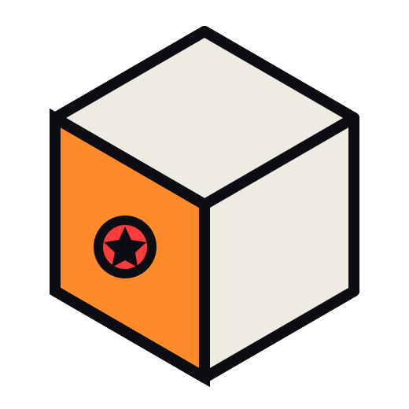
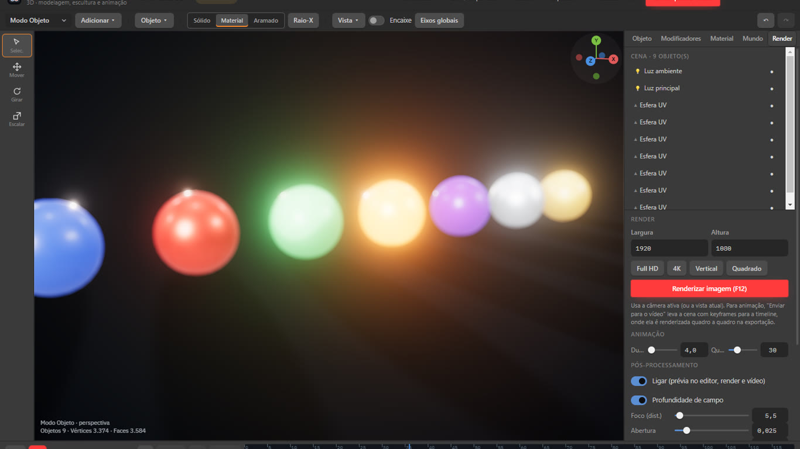
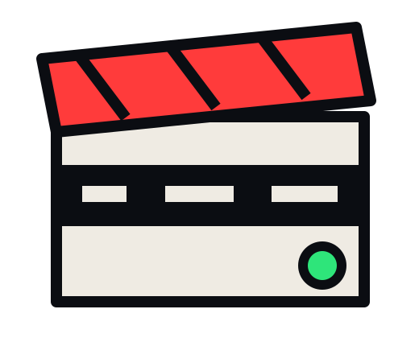

Mockups
Celular, tablet, notebook, monitor e embalagem com slot de tela que aceita imagem ou clipe de vídeo.
Programa 3D para motion graphics: mockups de dispositivo com tela substituível, ambiente com reflexos e vidro, scatter, céu com sol, profundidade de campo e brilho. O render entra como clipe no vídeo.

Cena, luz, mockups e render na timeline. Sem romper o fluxo do projeto.

Celular, tablet, notebook, monitor e embalagem com slot de tela que aceita imagem ou clipe de vídeo.
Ambiente procedural com reflexos, materiais com transmissão, metal e clearcoat.
Espalhe grama, pedras e árvores com densidade e semente sobre terreno por mapa de altura.
Elevação, azimute e turbidez do céu, sombras suaves, hora do dia com keyframe.
Mesma lógica de keyframes do vídeo; profundidade de campo, bloom, vinheta e filtro de pintura.
Altere a cena e o clipe atualiza na timeline, com alfa quando não há céu.
Celular, tablet, notebook, monitor ou cartão com a tela substituída por imagem ou clipe de vídeo sincronizado com a timeline; orbite a câmera e exporte com o vidro refletindo o ambiente.
Sol com sombras suaves e hora do dia por keyframe, céu físico, ambiente que reflete nos materiais e scatter de grama e pedras sobre terreno por mapa de altura.

Profundidade de campo, bloom, vinheta e filtro de pintura como pós-processo, iguais na prévia e na exportação.

glTF/GLB e OBJ, com materiais PBR.
Não. O foco é motion graphics e mockups; para escultura use um modelador e importe o GLB.
Não, o 3D faz parte do PRO.
Crie uma conta, baixe o Lite e edite o primeiro projeto em minutos. O PRO fica a uma chave de distância.
Windows 10 ou 11 · 64 bits · instalador de 118 MB
Feito para publicar. Cinco ferramentas, um arquivo, nenhuma troca de contexto.

Carregando comentários…